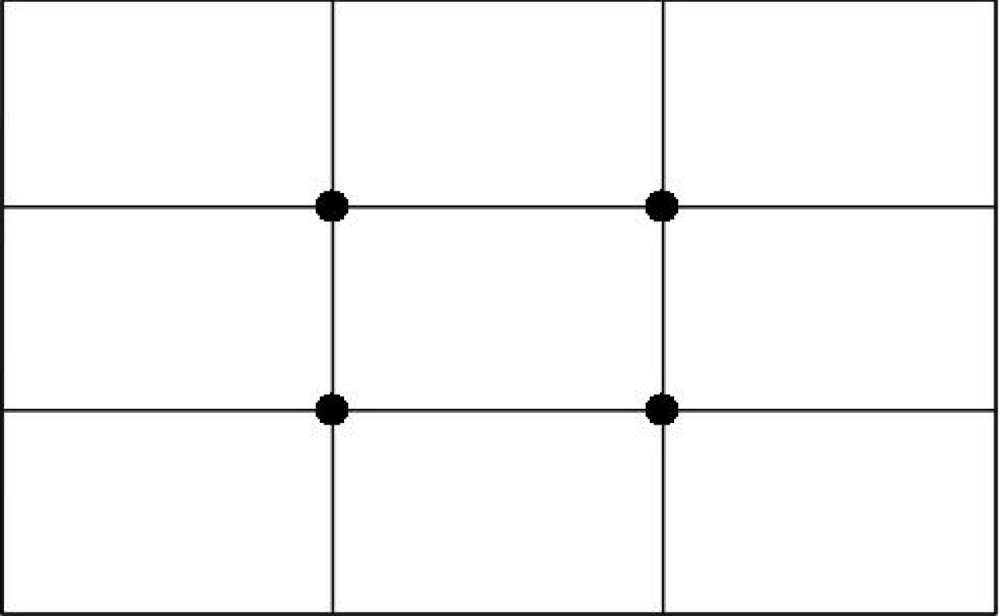
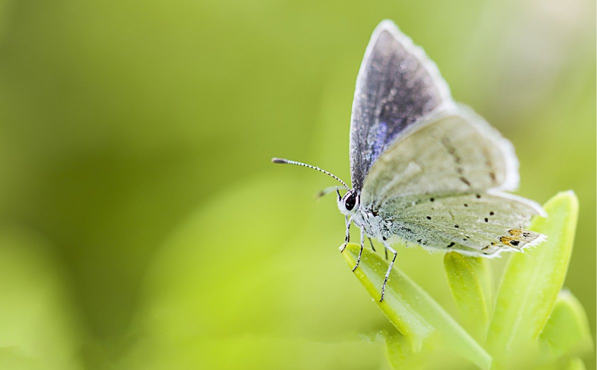
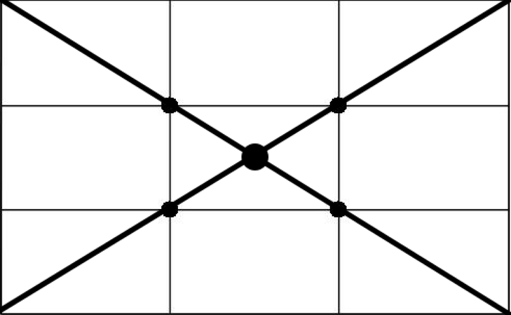
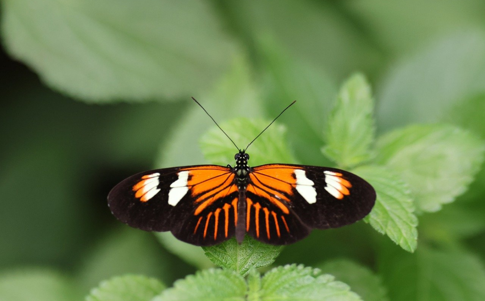
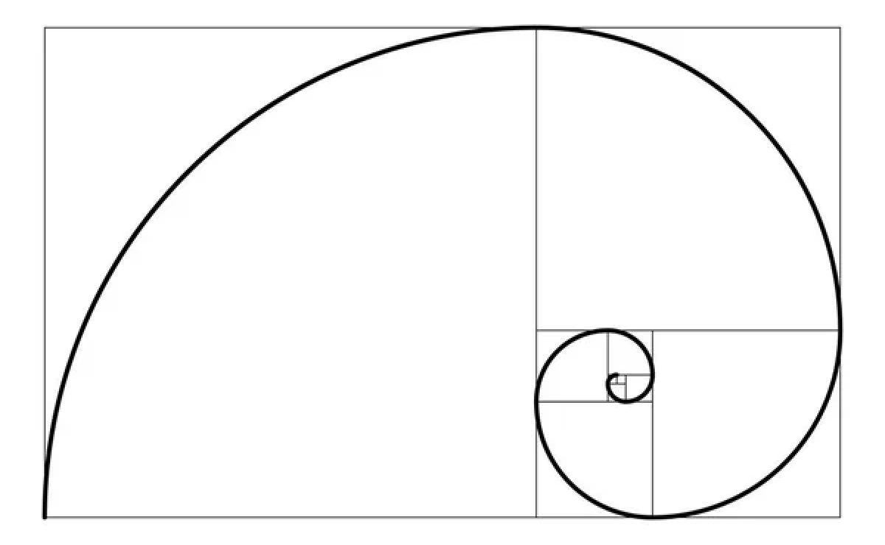
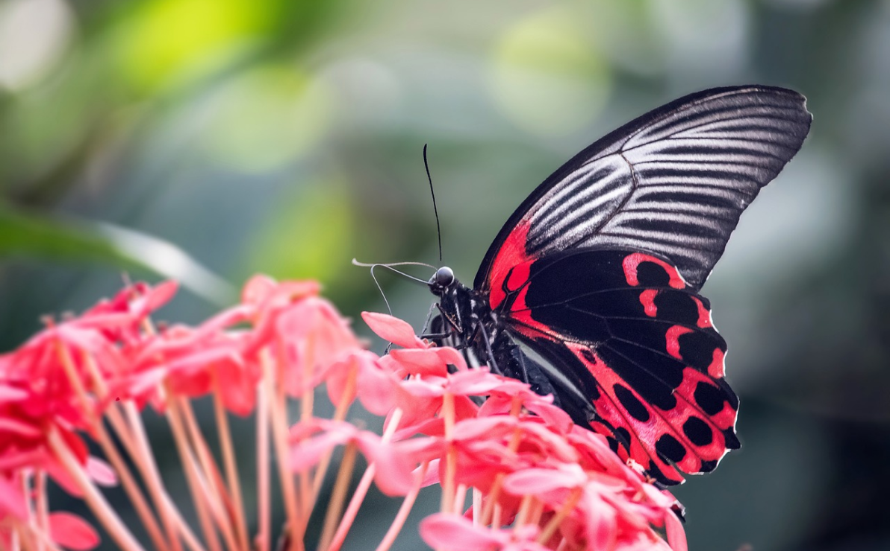

Photo
Автор використовує камеру Sony але вся основа підходить і для інших апаратів навіть і для смартфона (при використанні камери смартфона увімкніть ручний режим).
Розберемо режими які існують на камерах Режими камер можуть значно полегшити або розширити можливості фотографування залежно від ситуації. Ось огляд основних режимів, які ви можете знайти в більшості цифрових камер:
-
1. Автоматичний режим (Auto Mode)
У цьому режимі камера самостійно визначає всі налаштування (витримку, діафрагму, ISO тощо), щоб забезпечити найкращу експозицію. Це зручно для початківців або в ситуаціях, коли потрібно швидко зробити знімок.
-
2. Програмний режим (P - Program Mode)
Камера автоматично визначає експозицію, але користувач має можливість змінювати деякі параметри, такі як баланс білого, ISO та інші. Це дає більше контролю порівняно з автоматичним режимом.
-
3. Пріоритет витримки (S або Tv - Shutter Priority)
Фотограф задає витримку, а камера автоматично визначає інші параметри, щоб забезпечити правильну експозицію. Цей режим корисний при зйомці об'єктів, що швидко рухаються, де важливо заморозити рух або показати рух розмито.
-
4. Пріоритет діафрагми (A або Av - Aperture Priority)
Фотограф задає діафрагму, а камера автоматично визначає інші параметри. Використовується для контролю глибини різкості, що важливо при портретній зйомці або пейзажах.
-
5. Ручний режим (M - Manual Mode)
Фотограф самостійно налаштовує всі параметри: витримку, діафрагму, ISO тощо. Це дає повний контроль над зйомкою і дозволяє отримувати саме ті результати, які заплановані
-
6. Сцени (Scene Modes)
Це попередньо налаштовані режими для певних ситуацій, як-от портрет, спорт, макро, нічний режим та інші. Камера автоматично налаштовує параметри під конкретну сцену.
-
7. Панорамний режим (Panorama Mode)
Цей режим дозволяє знімати серію знімків, які потім автоматично зшиваються в одну панорамну фотографію.
-
8. HDR режим (High Dynamic Range)
Камера робить кілька знімків з різною експозицією і поєднує їх в одну фотографію з високим динамічним діапазоном, що дозволяє зберегти деталі як у світлих, так і в темних областях.
-
9. Творчі режими (Creative Modes)
Ці режими дозволяють застосовувати різні фільтри та ефекти безпосередньо під час зйомки, такі як чорно-білий, сепія, високий контраст і т. д.
-
10. Режим зйомки відео (Video Mode)
Дозволяє знімати відео з можливістю налаштування різних параметрів, як-от частота кадрів, роздільна здатність і ISO.
-
Поради для використання різних режимів:
- Автоматичний режим підходить для швидких знімків без зайвих налаштувань.
- Пріоритет витримки використовуйте для спортивних подій або рухомих об'єктів.
- Пріоритет діафрагми підійде для портретів або створення ефекту боке.
- Ручний режим використовуйте, коли хочете повністю контролювати процес зйомки.
- Сценові режими зручно використовувати для специфічних умов, коли ви не впевнені, які налаштування обрати.
-
Використовуючи ці режими, ви зможете отримувати кращі фотографії, відповідно до умов зйомки та ваших творчих задумів.
Розглянемо основні параметри, які впливають на якість і вигляд фотографій: ISO, витримка, діафрагма, баланс білого, фокусна відстань і експозиція.

Композиція є ключовим елементом в фотографії, який допомагає створювати візуально привабливі і гармонійні знімки.
Основні принципи композиції:
-
Правило третин (Rule of Thirds)
- Кадр ділиться на дев'ять рівних частин за допомогою двох горизонтальних і двох вертикальних ліній. Важливі елементи зображення розміщуються вздовж цих ліній або на їх перетинах, що створює більш збалансований і цікавий кадр.
  -
Центральна композиція
- Основний об'єкт розміщується в центрі кадру. Це може бути ефективним для створення симетрії та фокусування уваги на головному об'єкті.
  -
Золотий перетин (Golden Ratio)
- Це більш складний варіант правила третин, де композиція базується на математичному відношенні приблизно 1:1.618. Об'єкти розташовуються уздовж спіралі золотого перетину, що створює гармонійний і природний вигляд кадру.
  -
Лінії і напрямки (Leading Lines)
- Використання ліній в кадрі (дороги, річки, будівлі), які ведуть очі глядача до головного об'єкта. Це додає глибини і динаміки до зображення.
-
Рамка в рамці (Frame within a Frame)
- Використання елементів сцени для створення природних рамок навколо основного об'єкта (наприклад, двері, вікна, арки). Це допомагає сфокусувати увагу на головному об'єкті і додає глибини.
-
Відкритий простір (Negative Space)
- Залишення великої кількості порожнього простору навколо головного об'єкта. Це дозволяє підкреслити важливість об'єкта і створює мінімалістичний вигляд.
-
Баланс (Balance)
- Досягнення візуальної рівноваги в кадрі. Симетричний баланс використовує однакові елементи по обидві сторони від центру, а асиметричний баланс використовує різні елементи для створення рівноваги.
-
Поради для розміщення моделей або об'єктів:
- Розміщення об'єкта на перетинах ліній правил третин робить зображення більш динамічним.
- Залучайте природні лінії і рамки для спрямування уваги на головний об'єкт.
- Експериментуйте з центральною композицією для симетричних і зосереджених кадрів.
- Використовуйте негативний простір для створення мінімалістичних знімків.
Висновок
Розуміння і правильне використання режимів камери та основних параметрів, таких як ISO, витримка, діафрагма, баланс білого, фокусна відстань та експозиція, є ключем до створення якісних і професійних фотографій. Композиція, включаючи принципи правила третин, золотого перетину, ліній і напрямків, рамки в рамці, відкритого простору та балансу, відіграє вирішальну роль у визначенні розташування моделі чи об'єкта в кадрі.
Практика та експерименти з цими налаштуваннями і принципами дозволять вам вдосконалювати свої навички фотографа, створюючи візуально привабливі і технічно досконалі знімки. Незалежно від рівня вашої підготовки, завжди важливо продовжувати вивчати і застосовувати ці знання, щоб досягати найкращих результатів у своїх фотографіях.